전자기사 (2010-05-09 기출문제)
1과목: 전기자기학
1. 반자성체에 속하는 물질은?
- Ni
- Co
- Ag
- Pt
(정답률: 알수없음)

2. z=0인 평면상에 중심이 원점에 있고 반경이 a[m]인 원형 도체에 그림과 같이 I[A]가 흐를 때 z=b인 점에서 자계의 세기는? (단, az는 단위 벡터이다.)
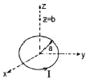
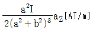
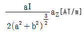
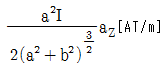
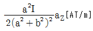
(정답률: 알수없음)
3. 패러데이관(Faraday tube)의 성질에 대한 설명으로 틀린 것은?
- 패러데이관 중에 있는 전속수는 그 관속에 진전하가 없으면 일정하며 연속적이다.
- 패러데이관의 양단에는 양 또는 음의 단위 진전하가 존재하고 있다.
- 패러데이관의 밀도는 전속밀도와 같지 않다.
- 단위 전위차 당 패러데이관의 보유에너지는 1/2[J]이다.
(정답률: 알수없음)
4. 단면적 4[cm2]의 철심에 6×10-4 [Wb]의 자속을 통하게 하려면 2800[AT/m]의 자계가 필요하다. 이 철심의 비투자율은?
- 약 357
- 약 375
- 약 407
- 약 426
(정답률: 알수없음)
5. 그림과 같이 n개의 동일한 콘덴서 C를 직렬 접속하여 최하단의 한 개와 병렬로 정전용량 Co의 정전전압계를 접속하였다. 이 정전전압계의 지시가 V일 때, 측정전압 Vo는?
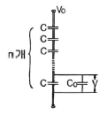
- nV
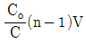
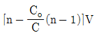
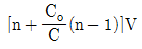
(정답률: 알수없음)
6. 평형판 공기콘덴서의 양 극판에 +ρ[C/m2], -ρ[C/ρ]의 전하가 충전되어 있을 때, 이 두 전극 사이에 유전율 ε[F/m]인 유전체를 삽입한 경우의 전계의 세기는? (단, 유전체의 분극전하밀도를 + ρP[C/m2], -ρP[C/m2]라 한다.)
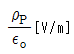
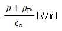
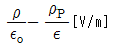
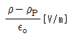
(정답률: 알수없음)
7. 두 개의 길고 직선이 도체가 평행으로 그림과 같이 위치하고 있다. 각 도체에는 10[A]의 전류가 같은 방향으로 흐르고 있으며, 이격거리는 0.2[m]일 때 오른쪽 도체의 단위 길이당 힘은? (단, ax, az는 단위벡터이다.)
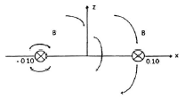
- 10-2 (-ax)[N/m]
- 10-4 (-ax)[N/m]
- 10-2 (-az)[N/m]
- 10-4 (-az)[N/m]
(정답률: 알수없음)
8. 두 평행판 축전기에 채워진 폴리에틸렌의 비유전율이 εr, 평행판간 거리 d=1.5[mm]일 때, 만일 평행판내의 전계의 세기가 10[kV/m]라면 평행판간 폴리에틸렌 표면에 나타난 분극전하 밀도는?
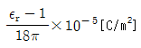
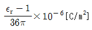
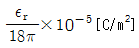
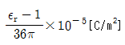
(정답률: 10%)
9. 무한평면도체 표면으로부터 r[m] 거리의 진공 중에 전자 e[C]가 있을 때, 이 전자의 위치 에너지는?
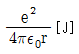
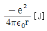
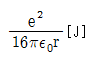
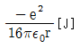
(정답률: 알수없음)
10. 저항 10[Ω], 저항의 온도계수 α1=5×10-3 [1/℃]의 동선에 직렬로 90[Ω], 온도계수 α2 ≒0[1/℃]의 망간선을 접속하였을 때의 합성저항 온도계수는?
- 2×10-4[1/℃]
- 3×10-4[1/℃]
- 4×10-4[1/℃]
- 5×10-4[1/℃]
(정답률: 알수없음)
11. 대전도체 표면전하밀도는 도체표면의 모양에 따라 어떻게 분포하는가?
- 표면전하밀도는 표면의 모양과 무관하다.
- 표면전하밀도는 평면일 때 가장 크다.
- 표면전하밀도는 뾰족할수록 커진다.
- 표면전하밀도는 곡률이 크면 작아진다.
(정답률: 알수없음)
12. 그림과 같은 무한직선전류 I1과 직사각형 모양의 루프선전류 I2간의 상호유도계수는?
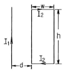
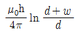
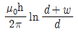
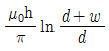
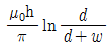
(정답률: 알수없음)
13. 그림과 같이 q1=6×10-6[C], q2=-12×10-5 [C]의 두 전하가 서로 100[cm] 떨어져 있을 때 전계 세기가 0이 되는 점은?
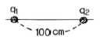
- q1과 q2의 연장선상 q1으로부터 왼쪽으로 약 24.1[m] 지점이다.
- q1과 q2의 연장선상 q1으로부터 오른쪽으로 약 14.1[m] 지점이다.
- q1과 q2의 연장선상 q1으로부터 왼쪽으로 약 2.41[m] 지점이다.
- q1과 q2의 연장선상 q1으로부터 왼쪽으로 약 1.41[m] 지점이다.
(정답률: 알수없음)
14. 폐회로에 유도되는 유도기전력에 관한 설명으로 옳은 것은?
- 렌쯔의 법칙은 유도기전력의 크기를 결정하는 법칙이다.
- 전계가 일정한 공간 내에서 폐회로가 운동하여도 유도기전력이 유도된다.
- 유도기전력은 권선수의 제곱에 비례한다.
- 자계가 일정한 공간 내에서 폐회로가 운동하여도 유도기전력이 유도된다.
(정답률: 알수없음)
15. 자계가 비보존적인 경우를 나타내는 것은? (단, j는 공간상에 0이 아닌 전류밀도를 의미한다.)
- ▽∙B=0
- ▽∙B-=j
- ▽×H=0
- ▽×=j
(정답률: 알수없음)
16. 콘크리트(εr=4, μr=1) 중에서 전자파의 고유 임피던스는 약 몇 [Ω]인가?
- 35.4[Ω]
- 70.8[Ω]
- 124.3[Ω]
- 188.5[Ω]
(정답률: 알수없음)
17. 40[V/m]인 전계 내의 50[V]되는 점에서 1[C]의 전하가 전계 방향으로 80[cm] 이동하였을 때, 그 점의 전위는?
- 18[V]
- 22[V]
- 35[V]
- 65[V]
(정답률: 알수없음)
18. 자화율(magnetic susceptibility) X 상자성체에서 일반적으로 어떤 값을 갖는가?
- X= 0
- X> 0
- X< 0
- X= 1
(정답률: 알수없음)
19. 무한히 넓은 평행판을 2[cm]의 간격으로 놓은 후 평행판 간에 일정한 전계를 인가하였더니 도표면에 2[μC/m2]의 전하밀도가 생겼다. 이 때 행판 표면의 단위면적당 받는 정전응력은?
- 1.13×10-1[N/m2]
- 2.26×10-1[N/m2]
- 1.13[N/m2]
- 2.26[N/m2]
(정답률: 알수없음)
20. 평등자계내의 내부로 ㉠자계와 평행한 방향, ㉡자계와 수직인 방향으로 일정속도의 전자를 입사시킬 때 전자의 운동 궤적을 바르게 나타낸 것은?
- ㉠ 원, ㉡ 타원
- ㉠ 직선, ㉡ 타원
- ㉠ 직선, ㉡ 원
- ㉠ 원, ㉡ 원
(정답률: 알수없음)
2과목: 회로이론
21. 다음 회로에서 전류 I의 크기는?
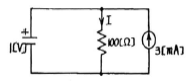
- 3[mA]
- 10[mA]
- 7[mA]
- 13[mA]
(정답률: 알수없음)
22. 무부하 전압이 210[V]이고 정격전압이 200[V], 정격출력이 5[kW]인 직류발전기의 내부저항은?
- 0.2[Ω]
- 0.4[Ω]
- 2[Ω]
- 4[Ω]
(정답률: 알수없음)
23. 다음 회로의 구동점 임피던스가 정저항 회로가 되기 위한 Z1, Z2 및 R 의 관계는?
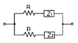
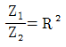
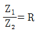
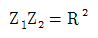
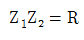
(정답률: 알수없음)
24. 이상적인 변압기의 조건으로 옳은 것은?
- 코일에 관계되는 손실이 없이, 두 코일의 결합계수가 1인 경우
- 상호 자속이 전혀 없는 경우, 즉 유도 결합이 없는 경우
- 상호 자속과 누설 자속이 전혀 없는 경우
- 결합 계수 K가 0인 경우
(정답률: 알수없음)
25. R-L 직렬 회로에서 50[V]의 교류 전압을 인가하였을 때, 저항에 걸리는 전압이 30[V]였다면 인덕터(코일) 양단에 걸리는 전압은?
- 8[V]
- 20[V]
- 40[V]
- 50[V]
(정답률: 알수없음)
26.
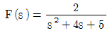
의 시간함수는?- 2e-2tsint
- 2e-2tcost
- 2e-2tsin2t
- 2e-2tcos2t
(정답률: 알수없음)
27. 기본파의 30[%]인 제2고조파와 20[%]인 제3고조파를 포함하는 전압의 왜형률은?
- 0.24
- 0.28
- 0.32
- 0.36
(정답률: 알수없음)
28. 다음과 같은 회로에서 단자 a, b 왼쪽 회로의 테브난 등가 전압원은?
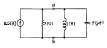
- 0.5[V]
- 1[V]
- 1.5[V]
- 2[V]
(정답률: 알수없음)
29. 정현파의 파고율은?
- 1
- √2
- √3
- 2
(정답률: 알수없음)
30. 100[V]에서 250[W]의 전력을 소비하는 저항을 200[V]에 접속하면 소비전력은?
- 100[W]
- 250[W]
- 500[W]
- 1000[W]
(정답률: 알수없음)
31. R-L 직렬회로에서 t=0일 때, 직류 전압 100[V]를 인가하면 흐르는 전류 i(t)는? (단, R=50[Ω], L=10[H]이다.)
- 2(1-e5t)[A]
- 2(1-e-5t)[A]
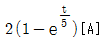
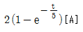
(정답률: 알수없음)
32. 다음 파형 중에서 실효치가 가장 큰 것은? (단, 주기는 모두 동일함)
- 삼각파
- 구형파
- 톱니파
- 정현파
(정답률: 알수없음)
33. 어떤 회로의 피상전력이 20[kVA]이고 유효전력이 15[kW]일 때 이 회로의 역률은?
- 0.9
- 0.75
- 0.6
- 0.45
(정답률: 알수없음)
34. R=10[Ω], L=0.2[H]인 R-L 직렬회로에 60[Hz], 120[V]의 교류 전압이 인가될 때 흐르는 전류는?
- 4.7[A]
- 3.2[A]
- 2.8[A]
- 1.6[A]
(정답률: 알수없음)
35. R=8[Ω], XL=8[Ω], XC=2[Ω]인 R-L-C 직렬회로에 정형파 전압 V=100[V]를 인가할 때 흐르는 전류는?
- 10[A]
- 20[A]
- 30[A]
- 40[A]
(정답률: 알수없음)
36. 다음과 같은 회로에서 저항 RL 양단자(RL을 개방)에서 본 테브난 등가저항[Ω]은?
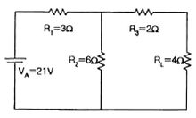
- 2[Ω]
- 4[Ω]
- 6[Ω]
- 8[Ω]
(정답률: 알수없음)
37. 다음 회로에서 2[Ω] 저항에 흐르는 전류 I는?
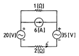
- 3[A]
- 4[A]
- 5[A]
- 7[A]
(정답률: 알수없음)
38. 순시전류 i=3√2sin(377t-30°[A]의 평균값은?
- 1.35[A]
- 2.7[A]
- 3.45[A]
- 5.7[A]
(정답률: 알수없음)
39. 대칭 4단자망에서 영상 임피던스는?
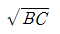
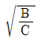
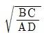
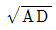
(정답률: 알수없음)
40. 함수 f(t)=sinωt+2cosωt의 라플라스 변환은?
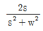
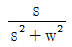
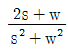
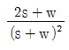
(정답률: 알수없음)
3과목: 전자회로
41. 어떤 차동증폭기의 동상신호제거비(CMRR)가 80[dB]이고 차동이득(Ad)이 1000일 때, 동상이득(Ac)은?
- 0.1
- 1
- 10
- 12.5
(정답률: 알수없음)
42. 다음 정전압회로에서 입력전압이 15[V], 제너전압이 10[V], 제너 다이오드에 흐르는 전류가 25[mA], 부하저항이 100[Ω]일 때 저항 R1의 값은?
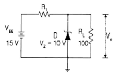
- 20[Ω]
- 40[Ω]
- 125[Ω]
- 200[Ω]
(정답률: 알수없음)
43. 입력 저항이 가장 크게 될 수 있는 회로는?
- 부트스트랩 회로
- cascade 증폭기 회로
- 트랜지스터 chopper 회로
- 베이스 접지형 증폭기 회로
(정답률: 알수없음)
44. 병렬 전류 궤환 증폭기의 궤환 신호 성분은?
- 전압
- 전류
- 전력
- 임피던스
(정답률: 알수없음)
45. 다음의 직렬형 전압조정기 회로에서 출력전압은? (단, 제너전압 VR은 5.1[V]이고, R1=1[kΩ], R2=R3=10[kΩ]이다.)
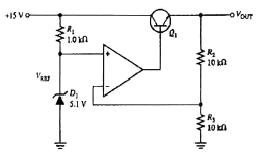
- 5.1[V]
- 10.2[V]
- 15.3[V]
- 18.2[V]
(정답률: 알수없음)
46. 수정 발진기에 대한 설명으로 가장 적합한 것은?
- 주파수 안정도가 매우 높다.
- 발진주파수를 쉽게 변경이 가능하다.
- 수정편의 두께는 발진주파수와 관계가 없다.
- 발진조건을 만족하는 유도성 주파수 범위가 매우 넓다.
(정답률: 알수없음)
47. 드리프트(drift) 현상의 주된 원인으로 적합하지 않은 것은?
- 소자의 경년변화
- 전원전압의 변화
- 주위 온도 변화
- 대역폭의 변화
(정답률: 알수없음)
48. 다음 회로에서 Re의 주 역할은?
- 출력증대
- 동작점의 안정화
- 바이어스 전압감소
- 주파수 대역폭 증대
(정답률: 알수없음)
49. 다음 회로에서 부하 RL에 흐르는 전류는?
- 1[mA]
- 1.5[mA]
- 2[mA]
- 4[mA]
(정답률: 50%)
50. 궤환이 없을 때 전압 이득이 60[dB]인 증폭기에 궤환율이 0.01인 부궤환을 걸 때 이 증폭기의 증폭도는?
- 91
- 100
- 165
- 223
(정답률: 알수없음)
51. 펄스 반복주파수 600[Hz], 펄스폭 1.5[μs]인 펄스의 충격계수 D는?
- 1×10-4
- 3×10-4
- 6×10-4
- 9×10-4
(정답률: 알수없음)
52. 트랜지스터의 컬렉터 누설전류가 주위 온도변화로 1.2[μA]에서 239.3[μA]로 증가되었을 때 컬렉터의 전류변화가 1[mA]라면 안정도 계수 S는?
- 1
- 2.3
- 4.2
- 6.3
(정답률: 알수없음)
53. 베이스 변조와 비교하여 컬렉터 변조회로의 특징으로 적합하지 않은 것은?
- 조정이 어렵다.
- 변조효율이 좋다.
- 대전력 송신기에 적합하다.
- 높은 변조도에서 일그러짐이 적다.
(정답률: 알수없음)
54. 피변조파 전압 V(t)가 100(1+0.8cos2000t)sin106t[V]로 표시될 때 하측파의 최대 진폭은?
- 40[V]
- 56.6[V]
- 80[V]
- 113.1[V]
(정답률: 알수없음)
55. 다음 회로의 명칭으로 가장 적합한 것은?
- 저역통과 여파기
- 고역통과 여파기
- DC-AC 변환기
- 시미트 트리거
(정답률: 알수없음)
56. 다음 리미터 회로에서 부하 RL 양단에 나타나는 전압의 첨두값은?
- 3.9[V]
- 7.2[V]
- 9.1[V]
- 10.0[V]
(정답률: 알수없음)
57. 다음의 회로에서 차동 증폭기의 출력전압 Vo는?
- 100 V1
- 120 V1
- 250 V1
- 300 V1
(정답률: 알수없음)
58. 궤환 증폭기에서 무궤환시 전압이득이 100이고, 고역 3[dB] 차단주파수가 150[kHz]일 때, 궤환시 전압이득이 10이면 고역 3[dB] 차단주파수는?
- 15[kHz]
- 100[kHz]
- 1000[kHz]
- 1500[kHz]
(정답률: 알수없음)
59. 적분회로로 사용가능한 회로는?
- 저역통과 RC 회로
- 고역통과 RC 회로
- 대역소거 RC 회로
- 대역통과 RC 회로
(정답률: 알수없음)
60. 다음과 같은 부궤환 증폭기에서 출력임피던스는 궤환이 없을 때에 비하여 어떻게 변하는가?
- 감소한다.
- 증가한다.
- 1/hos이 된다.
- 변함이 없다.
(정답률: 알수없음)
4과목: 물리전자공학
61. 얼리(Early) 효과와 가장 관련이 깊은 것은?
- 항복 현상
- 이미터의 효율
- 베이스 폭의 감소
- 집중현상
(정답률: 알수없음)
62. 진성 반도체에서 전도대 준위가 0.3[eV]이고, 가전자대 준위가 0.7[eV]이면 페르미 준위는?
- 0.7[eV]
- 0.5[eV]
- 0.45[eV]
- 0.25[eV]
(정답률: 알수없음)
63. 확산 현상에 대한 설명 중 옳은 것은?
- 캐리어 농도가 큰 쪽에서 작은 쪽으로 이동한다.
- 온도가 높을수록 충돌 빈도가 커지므로 확산이 어렵다.
- 열평형이란 전자의 드리프트와 정공의 드리프트 전류가 동시에 발생하는 경우이다.
- 충돌빈도가 클수록 평균 자유 행정과 평균 속도가 작아져서 확산이 쉽다.
(정답률: 알수없음)
64. 진성 반도체에서 드리프트 전류의 대부분이 자유전자에 의해 발생하는 가장 큰 이유는?
- 정공의 가전자대에 있기 때문
- 자유전자는 전도대에 있기 때문
- 정공보다 더 많은 자유전자가 있기 때문
- 자유전자의 이동도가 정공의 이동도보다 크기 때문
(정답률: 알수없음)
65. 정공의 확산계수 DP=55×10-4[m2/s]이고, 정공의 평균 수명 τP=10-6 [s]일 때 확산 길이(mean free path)는?
- 3.7×10-5[m]
- 7.4×10-5[m]
- 3.7×10-4[m]
- 7.4×10-4[m]
(정답률: 알수없음)
66. 터널 다이오드의 부성저항 특성을 이용한 것은?
- 증폭작용
- 변조작용
- 발진작용
- 검파작용
(정답률: 알수없음)
67. 온도가 상승하면 N형 반도체의 페르미(Fermi) 준위는?
- 전도대 쪽으로 근접 접근
- 가전자대 쪽으로 근접 접근
- 충만대 쪽으로 근접 접근
- 금지대 영역 중앙으로 근접 접근
(정답률: 알수없음)
68. 금속에 빛을 비추면 금속표면에서 전자가 공간으로 방출되는 것은?
- 전계방출
- 광전자방출
- 열전자방출
- 2창 전자방출
(정답률: 알수없음)
69. N형 불순물로 사용될 수 없는 것은?
- 인(P)
- 비소(As)
- 안티몬(Sb)
- 알루미늄(Al)
(정답률: 알수없음)
70. 트랜지스터의 α차단 주파수에 대한 설명으로 옳은 것은?
- 확산계수에 반비례한다.
- 컬렉터 용량에 비례한다.
- 베이스 주행시간에 비례한다.
- 베이스 폭의 자승에 반비례한다.
(정답률: 알수없음)
71. 2500[V]의 전압으로 가속된 전자의 속도는? (단, 전자질량은 9.11×10-31 [kg]이고, 전하량은 1.6×10-19 [C]이다.)
- 2.97×107[m/s]
- 2.97×108[m/s]
- 0.94×106[m/s]
- 0.94×107[m/s]
(정답률: 알수없음)
72. 페리미 준위에 대한 설명으로 옳지 않은 것은?
- 전자의 존재 확률은 50[%]가 된다.
- 0[K]에서 전자의 최고 에너지가 된다.
- 0[K]에서 N형 반도체의 경우 전도대와 금지대 사이에 위치한다.
- 진성 반도체의 경우 온도와 무관하게 금지대 중앙에 위치한다.
(정답률: 알수없음)
73. 다음 중 Fermi-Dirac 분포 함수는?
(정답률: 알수없음)
74. 일반 BJT와 비교한 MOSFET의 장점으로 틀린 것은?
- 구조가 간단하다.
- 입력 저항이 크다.
- 고속 스위칭 동작에 적합하다.
- 높은 집적도의 집적회로에 적합하다.
(정답률: 알수없음)
75. 반도체 내의 캐리어의 이동도(μ)와 확산계수(D) 사이의 관계로 옳은 것은?
(정답률: 알수없음)
76. P형 반도체의 정공이 1[m2]당 4.4×1020개일 때 이 반도체의 도전율은? (단, 정공의 이동도는 0.17[m2/Vㆍs]이다.)
- 11.97[Ω/m]
- 119.7[Ω/m]
- 239.6[Ω/m]
- 479.2[Ω/m]
(정답률: 알수없음)
77. 9.5×104 [m/s]의 속도로 운동하는 수소원자의 드브로이(de Broglie)파의 파장은? (단, 수소원자의 질량은 1.67×10-24 [kg]이고, Plank 상수 h는 6.62×10-34[Js-1 ]이다.)
- 2.08×10-15[m]
- 4.17×10-15[m]
- 3.48×10-16[m]
- 7.25×10-16[m]
(정답률: 알수없음)
78. 베이스 접지시 전류증폭률이 0.98일 때 이미터 접지시 전류증폭률은?
- 20
- 40
- 49
- 98
(정답률: 알수없음)
79. PN 접합에 관한 다음의 설명 중 옳은 것은?
- 공간 전하 영역은 역방향 바이어스가 커지면 넓어진다.
- PN 접합에 순방향 바이어스를 가하면 공핍층 근처에 소수캐리어 밀도가 감소한다.
- 불순물의 농도를 증가시키면 공간 전하영역이 넓어진다.
- PN 접합부에 전계가 발생하고 이는 확산을 가속화시킨다.
(정답률: 알수없음)
80. 전압에 따라 저항값이 크게 변하는 소자로서 서지 전압에 대한 회로보호 등의 기능으로 사용되는 것은?
- 서미스터
- 바리스터
- 가변저항기
- 터널 다이오드
(정답률: 알수없음)
5과목: 전자계산기일반
81. 마스크(mask)를 이용하여 비수치 데이터의 불필요한 부분을 제거하는데 사용하는 연산은?
- AND
- OR
- XOR
- NOR
(정답률: 알수없음)
82. 소프트웨어적으로 인터럽트의 우선순위를 결정하는 인터럽트 형식은?
- 폴링 방법에 의한 인터럽트
- 벡터 방식에 의한 인터럽트
- 슈퍼바이저 콜에 의한 인터럽트
- 데이지체인 방법에 의한 인터럽트
(정답률: 알수없음)
83. 다음 그림과 같은 회로의 명칭은?
- 반가산기
- 전가산기
- 전감산기
- parity checker
(정답률: 알수없음)
84. 컴퓨터나 주변장치 사이에 데이터 전송을 수행할 때 I/O 준비나 완료 상태를 나타내는 신호가 필요한 동기식 입출력 시스템에 널리 쓰이는 방식은?
- polling
- interrupt
- paging
- handshaking
(정답률: 70%)
85. 순서도를 작성하는 일반적인 규칙으로 옳지 않은 것은?
- 한국산업규격의 표준 기호를 사용한다.
- 제어 흐름에 따라 위에서 아래로, 왼쪽에서 오른쪽으로 그린다.
- 기호 내부에 처리내용을 자세하게 기술하고, 주석은 기술하지 않도록 한다.
- 문제가 복잡하고 어려울 때는 블록별로 나누어 단계적으로 그린다.
(정답률: 알수없음)
86. 다음 인터럽트 종류 중에서 일반적으로 우선순위가 높은 것부터 나열한 것은?
- a-d-c-b
- b-c-d-a
- a-b-c-d
- b-c-a-d
(정답률: 알수없음)
87. 주기억장치의 용량이 512KB인 컴퓨터에서 32비트의 가상주소를 사용하는데, 페이지의 크기가 1K워드이고 1워드가 4바이트라면 주기억장치의 페이지 수는?
- 32개
- 64개
- 128개
- 512개
(정답률: 알수없음)
88. 인스트럭션 수행시 유효번지를 구하기 위한 메이저 상태는?
- fetch 메이저 상태
- execute 메이저 상태
- indirect 메이저 상태
- interrupt 메이저 상태
(정답률: 알수없음)
89. A, B 두 레지스터에 저장된 데이터를 XOR 연산하였을 때 얻게 되는 결과는? (단, A=1001 0101, B=0011 1011)
- 0101 0001
- 1001 0101
- 1010 1110
- 1100 0000
(정답률: 알수없음)
90. push와 pop operation에 의해서만 접근 가능한 storage device는?
- MBR
- queue
- stack
- chace
(정답률: 알수없음)
91. 가상기억장치를 사용할 때 주소 공간으로부터 기억공간으로 한 번에 옮겨지는 블록은?
- map
- stage
- page
- segment
(정답률: 알수없음)
92. 다음 프로그래밍 언어 중 고급언어가 아닌 것은?
- assembly
- C
- FORTRAN
- COBOL
(정답률: 알수없음)
93. 다음 표와 같이 동작하는 MN 플립플롭이 있다고 하자. 이 때, 현재상태 출력 Q=1일 때 다음 상태 출력 Q+=1이기 위한 M과 N의 입력으로 가장 적당한 것은? (단, x는 don't care)
- M=1, N=x
- M=0, N=x
- M=x, N=1
- M=x, N=0
(정답률: 알수없음)
94. 콘솔(console)이나 보조기억장치에서 마이크로프로그램이 로드(load)되는 기법은?
- dynamic micro-programming
- static micro-programming
- horizontal micro-programming
- vertical micro-programming
(정답률: 알수없음)
95. 다음 karnaugh도에 의한 논리식은?
- A
- B
- AB
- A+B
(정답률: 알수없음)
96. 원시 프로그램을 목적 프로그램으로 바꾸어 주기억장치에 저장하기까지의 실행과정으로 옳은 것은?
- 컴파일러 - 링커 - 로더
- 컴파일러 - 로더 - 링커
- 링커 - 컴파일러 - 로더
- 링커 - 로더 - 컴파일러
(정답률: 알수없음)
97. 다음 주소지정 방식 중에서 반드시 누산기를 필요로 하는 방식은?
- 3-주소지정 방식
- 2-주소지정 방식
- 1-주소지정 방식
- 0-주소지정 방식
(정답률: 알수없음)
98. 다음 설명 중 옳은 것은?
- 10진수 72의 "9의 보수"는 27이고, "10의 보수"는 28이다.
- 10진수 72의 "9의 보수"는 28이고, "10의 보수"는 27이다.
- 2진수 1010의 "1의 보수"는 0101이고, "2의 보수"는 0101이다.
- 2진수 1010의 "1의 보수"는 0110이고, "2의 보수"는 0101이다.
(정답률: 알수없음)
99. 중앙처리장치가 수행하는 명령어들을 기능별 4종류로 분류하였을 때, 이에 속하지 않는 것은?
- 함수연산 기능
- 전달 기능
- 기억 기능
- 입출력 기능
(정답률: 알수없음)
100. 다음 마이크로 동작은 어떤 기능을 의미하는가?
- 로드(LDA) 기능
- 스토어(STA) 기능
- 분기(JMP) 기능
- 덧셈(ADD) 기능
(정답률: 알수없음)